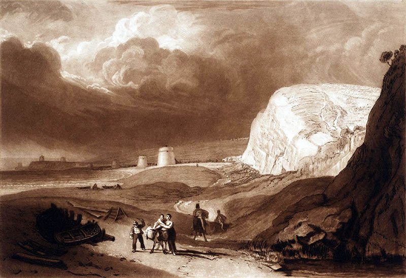
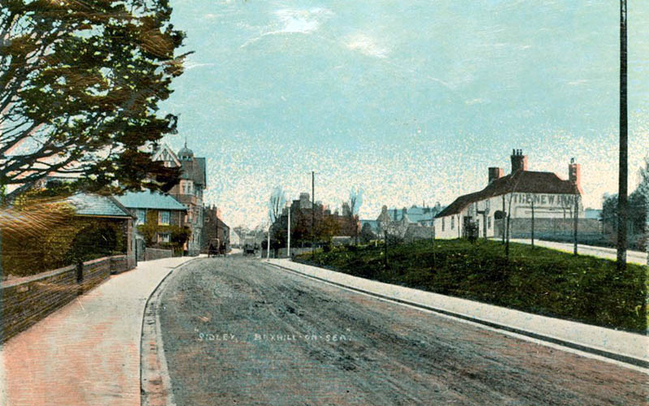

To try and quash this influx of illegal trading, a 'riding officer' was based at Bexhill in 1791.5 His job was to inquire and report about any smuggled goods along the coast, and if required, arrest and prosecute any felons he found (a tough job as the officer was often outnumbered).

'Martello Towers near Bexhill, Sussex' by Joseph Mallord William Turner, 1811.
By 1816 the Royal Navy's Coast Blockade Service had taken over to combat the smuggling, which proved to be a successful deterrent but were considered fair game for bribery.6Those that smuggled were known as landsmen: responsible for arranging distribution on the route to the main market in London. Little Common had one of the best-known smuggling gangs led by George Gillham and his family. Known as the Little Common Gang, they met regularly at the Wheatsheaf Inn (still located on Barnhorn Road) to draw their plans.7
Battle of Sidley Green
In the early hours of Friday 3rd January 1828 events were reaching their climax. The Coast Blockade manning the Martello Tower on Galley Hill spotted illicit cargo being landed on the beach close to where The Sackville now stands.
Sidley Green, circa 1910.
© Bexhill Museum
Smuggling Information Panels
There are six multilingual panels forming a trail around Bexhill, visit them to learn more about the town's fiery past.